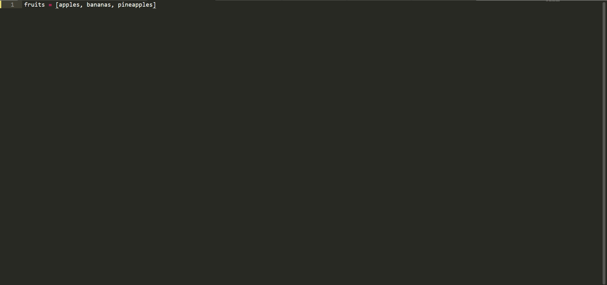

Сегодня мы поговорим о списках. Не будем тянуть, начнём с определения. Список в Python - это непрерывная динамическая коллекция элементов. Тут важно понимать, что есть неизменяемая коллекция элементов, а есть изменяемая. Списки относятся к изменяемой коллекции элементов. Списки создаются так:
Обратите внимание: где apple - название списка, остальное, что находится в списке - его элементы. Мы также можем вывести наш список с помощью print().
Сегодня мы поговорили о списках.